I've played the greatest games ever made, I collect the consoles and the memorabilia, I mod and restore hardware, I make videos about all of it as a YouTuber, and I build my own games. A real geek — and exactly the person you want testing your titles.
I'm Yan Kasabutski, 23, from Belarus and based in the EU. I've been playing video games since I was a kid and never stopped — it grew into collecting consoles, modding hardware, running a YouTube channel, leading a gaming community and building my own games. If it involves games, I'm into it. That's why testing games isn't just a job to me — it's my world.
Some of the online and PvP titles I've played — these and many more. I love story-driven single-player games just as much, but here are a few of the multiplayer games I know well.
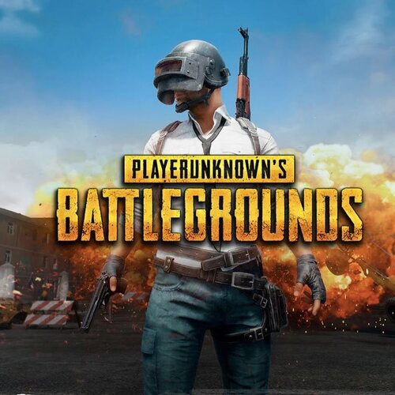
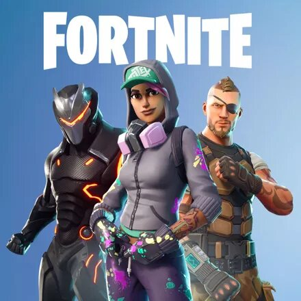
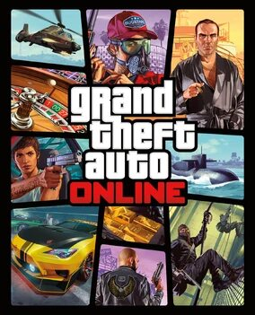
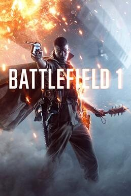
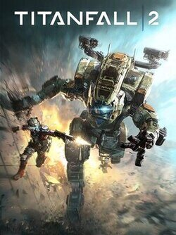
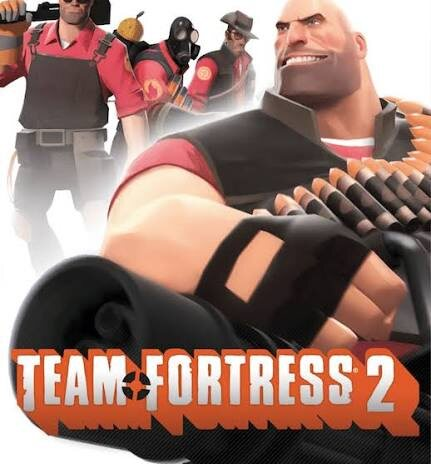
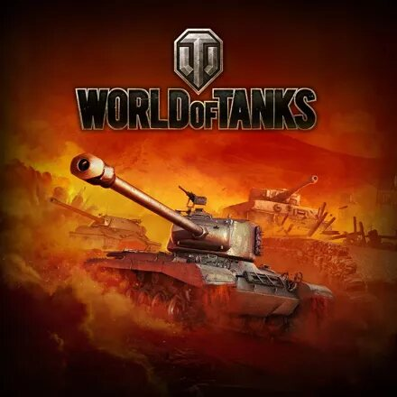
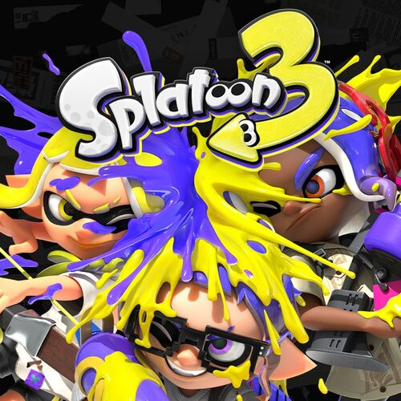
I don't just play — I design and build my own. Which means I test feel, balance and bugs every single day.
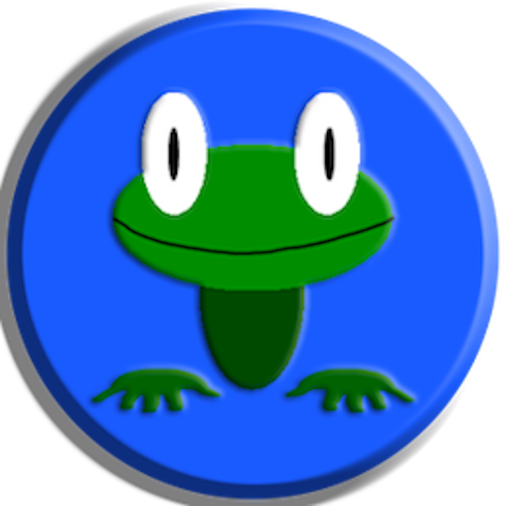
A story-driven JRPG built solo in Swift — narrative, design and code. I playtest pacing, balance and feel constantly.
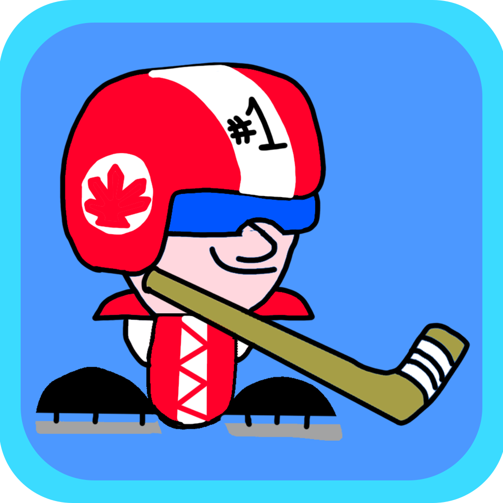
A fast, pick-up-and-play arcade hockey game for iPhone with local 1-vs-1 multiplayer.
I collect, mod and restore both the games and the hardware — from the Famicom era to the Switch. Here's the core of it.
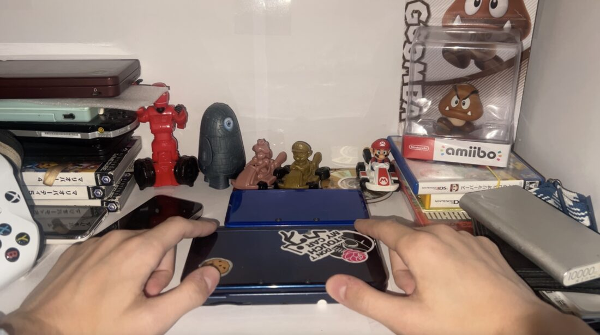
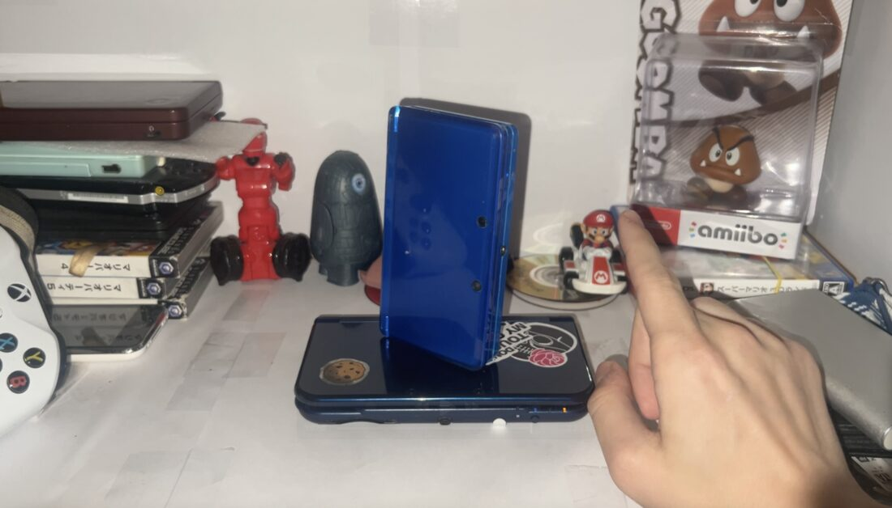
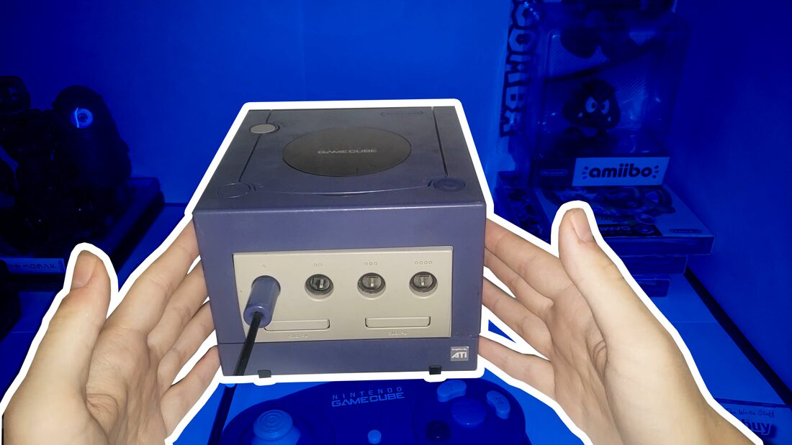
I've played the greatest titles across every era and genre — RPGs, platformers, and plenty of FPS / shooter / battle-royale.
I hunt down games and hardware, mod consoles and bring old machines back to life. I know how these systems really work.
I run a YouTube channel about games and consoles and lead gaming communities on Telegram and Discord.
I create videos about video games, consoles and Nintendo homebrew. Here are a few of my thumbnails — click to visit the channel.
This is the part I'm proudest of — I didn't just join a community, I built one.
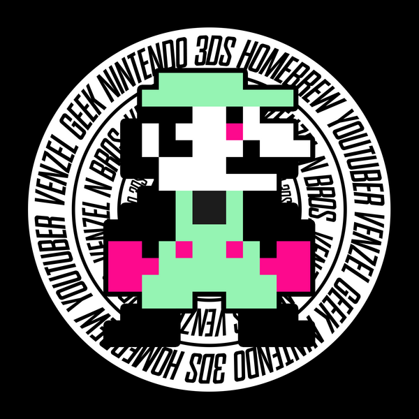
I'm the founder and leader of our Nintendo gaming community on Discord and Telegram. We're a crew that genuinely lives and breathes video games — we play together, help each other, share homebrew and mods, and celebrate everything Nintendo. Running it taught me to listen to feedback, keep people motivated and stay organised.
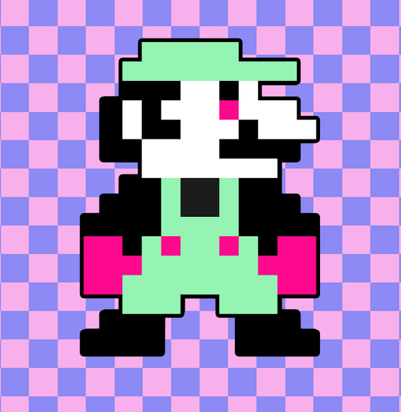
Happy to come in for a trial or interview any time.